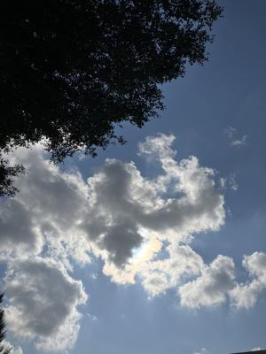
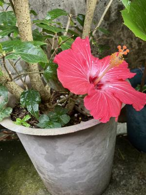
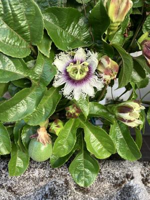

うるがいの話 ある日
最新: 短すぎる春の甲子園【うるがいの話 ある日】とは 一日だけのプログです
『うるがいの話』の最新一日だけのプログで、通信料が少なく経済的だ。カニの画像をクリックすると全ての日付が載る『うるがいの話』サイトを表示します
|
|
【うるがいの話】 うるがい(ｳﾙｶﾞｲ urugai)とは、『もずくがに』の名前でとても大きくなります。 |
|---|---|
|
|
【カミマヤーの話】 猫のことを方言でマヤーといいます。カミマヤー（kamimayaa）とは、神の猫のことです。 |
|
【たながぁの音楽】 たながぁ（ﾀﾅｶﾞｰ tanagaa）とは手長えびのことで、何種類かあり大きいのは車 エビぐらいになります。 |

|
【ぶながぁの話】 ぶながぁ(ﾌﾞﾅｶﾞｰ bunagaa)とは、赤い髪の毛、赤い身体、そして身長は１ｍ２０ｃｍ ぐらい、川の蟹を食べているの目撃された。場所は沖縄県国頭郡大宜味村のと ある村僕の隣近所に住んでいる爺さんから、聞いた話です。 |
|
|
【ギーマの話】 ギーマ(giima)とは、山原の里山に咲くスズランに似た、 花を付けます。実は食べられます、 気が付くと口の周りが紫になっています。 |
2026年03月19日 (木）短すぎる春の甲子園
15:49

『初めてじゃないですか、開会式の第一試合は』。この前の床屋
での会話です。でも、負けてしまいました、もう野球の試合は見
ません。鉢のハイビスカスに水を撒くと、鉢の直ぐ上に花が・・
また、こんなところに挿し木して！と思ったが、根元からちゃん
と咲いていました。

ウルガイさん、ご無沙汰しています。お元気ですか？
もう聞いてるかもしれないですが、ヒデさんが、今月いっぱ
いで退職されるそうです。
みんないなくなっちゃいますね‥
おお、あと一人だけだ。で、
連絡、ありがとうございます。
元気ですよ
退職日は３月３１日（火曜日）ですよね
ヒデさんに連絡します
ところで
タナガーさんは、あと何年勤める予定ですか？
私は今のところ来年度いっぱいの予定です。
オオ、すると昔の職場の皆さんは、退職し誰もいなくなる。アガ
サクリスティーの『そして誰もいなくなった』（まだ、半分です
）。
